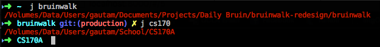

Homebrew is a package manager for OSX (much like apt-get on Ubuntu.)
With homebrew, installing new packages is as simple as
$ brew install vim # install a good text editor
$ brew install emacs # install a good operating systemFollow the simple directions at http://brew.sh to install it.
zshzsh is a replacement for bash, the terminal shell used by default on most operating systems
(and the one you probably use on your Mac)
It has a ton of nifty features to make your life way easier
(and you can make it look nice)
zsh (cont.)OSX already comes with a pretty new version of zsh
It's good enough for now, though you're welcome to install the newest version of zsh from Homebrew later, as shown below
$ brew install zshapt-get or whatever package manager you prefer)
I recommend sticking with the OSX version of zsh for now--the new one has a few incompatibilities.
oh-my-zsh is a configuration framework for zsh that bundles a bunch of useful plugins, themes, and aliases.
Or, as the author describes it:
Oh My Zsh is a way of life! Once installed, your terminal prompt will become the talk of the town or your money back! Each time you interact with your command prompt, you'll be able to take advantage of the hundreds of bundled plugins and pretty themes. Strangers will come up to you in cafés and ask you, "that is amazing. are you some sort of genius?" Finally, you'll begin to get the sort of attention that you always felt that you deserved. ...or maybe you'll just use the time that you saved to start flossing more often.
To install oh-my-zsh, go to ohmyz.sh and run the single-line install script, which should guide you through the installation process.
Or, run the following:sh -c "$(curl -fsSL https://raw.github.com/robbyrussell/oh-my-zsh/master/tools/install.sh)"zsh will automatically be set as your default shell.
Autojump is a faster way to navigate your filesystem. It works by maintaining a database of the directories you use the most from the command line.
We can use homebrew here:
$ brew install autojumpNo more dealing with ./configure or Makefiles!
zsh stores its configuration in ~/.zshrc
Open this file with a text editor, and we'll make a few changes.
zsh Configuration
# ~/.zshrc
# I've skipped less relevant lines, and just included the ones of interest
# * * *
ZSH_THEME="robbyrussell" # used to set the theme. Check out http://zshthem.es for more
export CLICOLOR=1 # make sure every program we run knows we like color
# * * *
# now the important part: plugins
plugins=(brew gitfast osx sudo autojump colored-man-pages)
# these are just my recommendations--we'll see what these do soon
zshI've made a small repository with a somewhat convoluted directory structure for our usage.
Download it here: https://github.com/gautamg795/zsh_demo
It has a directory structure as follows:
zsh_demo
├── data
│ ├── africa
│ │ ├── kenya
│ │ │ ├── literacy.txt
│ │ │ ├── income.txt
│ │ │ └── population.txt
│ │ └── ...
│ ├── asia
│ │ ├── ...
│ └── europe
│ ├── ...
└── data
├── africa
│ ├── kenya
│ │ ├── literacy_index.txt
│ │ ├── median_income.txt
│ │ └── population_by_province.txt
│ └── ...
├── ...
A glob is a short expression (like a wildcard, in regex) used to select groups of files
Try the following examples:
ls zsh_demo/**/*.txt # <= this is a glob
# list every file directly below the zsh_demo folder
ls zsh_demo
# list every file in the folders directly below the zsh_demo folder
ls zsh_demo/*
# list every file in every folder two levels below the zsh_demo folder
ls zsh_demo/*/*
# list every file anywhere below the zsh_demo folder
ls zsh_demo/**/*
# list every file that ends in .txt in every folder at any level below the zsh_demo folder
ls zsh_demo/**/*.txt
Pressing tab expands the glob in place, so you can preview it before running the command
Globbing can expand a lot more than just asterisks:
# list text files that end in a number from 1 to 10
ls -l zsh_demo/**/*<1-10>.txt
# list text files that start with the letter a
ls -l zsh_demo/**/[a]*.txt
# list text files that start with either me or po
ls -l zsh_demo/**/(me|po)*.txt
# list text files that don't start with a l or p
ls -l zsh_demo/**/[^lp]*.txt
zsh supports globbing far more advanced than this, but
this will get us pretty far.
We've all used tab completion to help fill in long filenames...
but zsh takes it to the next level.
Maybe you wanted to navigate to
./zsh_demo/data/asia/laos
You can type an abbreviated path, then just hit tab:
$ cd z/da/as/la <tab>
will expand to
$ cd zsh_demo/data/asia/laos
You can even autocomplete in the middle of a filename, so
$ cd demo <tab> will still expand to $ cd zsh_demo
(This is huge!)
zsh also keeps track of your directory stack--the order you changed directories.
Following your cd command with a dash, then pressing tab will
allow you to go back to previous directories, in order:
Do you remember the flags for tar? grep?
Me neither. And who wants to look at the man page every time?
zsh has you covered! Type the command and a '-' to start the flag, then press tab:
oh-my-zsh has a massive repository of plugins
(listed on the GitHub repo)
Earlier, when editing the .zshrc file, we enabled a few:
brewAdds autocompletion to Homebrew's command line utility. Nothing too fancy.
colored-man-pagesAdds some color to your man pages--it just looks nice
sudoIf you forgot to add sudo to your previous command,
press the Esc key twice to bring back the previous command, with
sudo prepended.
sudo !! to do the same thing)
osxIntegrates your terminal with OSX with the following commands
| Command | Description |
|---|---|
| tab | open the current directory in a new Finder tab |
| pfd | return the path of the frontmost Finder window |
| pfs | return the current Finder selection |
| cdf | cd to the current Finder directory |
gitfastAdds useful info about git repositories to your terminal (and it's fast)
Adds completions and shortcuts for practically every git command
autojumpThis is the cool one. Enables autojump, which allows for intelligent directory jumping.
(See next slide for more details)
autojumpAutojump learns your most commonly used folders, and makes switching between them an easy task. Only part of the directory name is actually required to switch directories.
It may not do too much for you yet, as it still needs to learn about where you cd to the most.
To use it, just type j <keyword>, where <keyword> is part of the directory name you're switching to.
j -s to see statistics on how directories are being weighted
You've probably used the arrow keys to navigate your history.
It works but...what if the command was typed a long time ago?
What if you can't remember the command, but you remember what file it ran on?